Глава 14 Геостатистика
\[\newcommand{\Var}{\operatorname{Var}} \newcommand{\Cov}{\operatorname{Cov}} \newcommand{\E}{\operatorname{E}}\]
14.1 Введение
Геостатистика — раздел математической статистики, который связан с численным описанием переменных, распределенных в географическом пространстве и, опционально, времени. Наиболее часто инструменты геостатистики используются для решения задачи интерполяции — восстановления сплошного поля распределения случайной величины по ограниченному множеству данных в точках наблюдений. Однако, геостатистика как научная дисциплина существенно шире. Ее первоочередной задачей является статистическое описание пространственных распределений.
В основе геостатистики лежит широко разработанный математический аппарат. Понимание основ этого аппарата является необходимым условием осмысленного примения геостатистических методов на практике. В настоящей главе мы постараемся сформировать у читателя данное понимание, и показать, как геостатистика работает на практике.
Мир геостатистики базируется на фундаментальных понятиях случайной величины, случайной функции и случайного процесса. Рассмотрим эти понятия.
14.2 Базовые понятия и элементы геостатистики
14.2.1 Базовые понятия
Отправной точкой геостатистического анализа является конечное множество точек (локаций), в каждой из которых зафиксировано значение некоторой пространственной переменной. Пространственную и атрибутивную составляющую традиционно разделяют на две компоненты, каждая из которых может быть случайной:
- Пространственные локации (точки) \[\{p_1, p_2, ..., p_n\}\]
- Данные в этих локациях \[\{Z(p_1), Z(p_2), ..., Z(p_n)\}\]
Данные в локациях получаются путем измерений значений пространственно распределенной переменной, или вычисления её значения на основе других данных, которые прямо или косвенно (через другие данные) базируются на прямых или дистанционных наблюдениях. Результаты измерений, как и исходные для расчетов данные, как правило, привязаны ко времени и характеризуют состояние среды на определенный момент. Если описываемое явление является динамическим (изменчивым во времени), результаты наблюдений или расчетов для двух разных моментов времени в общем случае будут различны. Эти различия невозможно полностью описать в аналитическом виде, поскольку природные и социально-экономические процессы формируются неопределенно большим числом факторов. Аналогично этому, невозможно и достоверно предсказать значение пространственной переменной в заданный момент времени. Чтобы работать с такими данными, используются понятия случайной величины и случайного процесса.
Случайной величиной \(Z(w)\) называется функция, которая в результате случайного события \(w\) принимает некоторое вещественнозначное значение.
Например, при анализе температуры водоема в отдельно взятой точке в толще воды случайной величиной (функцией) является собственно температура, а событием — та совокупность физико-химических условий, которая сложилась в данной точке в данный момент измерений и обусловила наблюдаемое значение температуры.
Отметим, что элемент случайности вносится именно событием, которое в природе может быть сформировано сложной и трудно предсказуемой комбинацией факторов, в то время как случайная величина уже связана с событием некоторой зависимостью, которую можно описать с помощью аналитических или эмпирических формул.
Случайность можно наблюдать не только в точке, но и по пространству. Например, уровень шума, формируемый автотранспортом в открытой городской среде, меняется непрерывно, и его можно измерить в каждой точке. При этом пространственное распределение величины этого уровня будет в каждый момент времени зависеть от случайного события — размещения автомобилей и уровня шума, производимого каждым из них. Городская среда оказывается полностью заполнена шумовым эфиром, густота которого неодинакова в пространстве и времени. Перемещаясь из точки в точку или ожидая последующего момента времени, находясь в одной точке, мы будем наблюдать разный уровень шума. Состояние этого шумового эфира как единого целого является случайным процессом.
Введем общее понятие случайного процесса:
Случайный процесс это семейство случайных величин, индексированных некоторым параметром \(t\)
Наиболее часто анализируются одномерные случайные процессы, в которых \(t\) — это время. Классическим примером такого процесса является количество покупателей, находящихся в магазине.
Пространственная статистика изучает случайные процессы, в которых \(t\) — это координата точки (обычно на плоскости). Такие процессы характеризуются следующими особенностями:
в каждой точке \(p_i\) существует некоторая случайная величина \(Z(p_i)\) — сечение случайного процесса
при изменении точки \(p_i\) наблюдаемое значение случайного процесса меняется случайным образом, поскольку определяется оно не только местоположением, но и заранее неизвестным случайным событием.
Для описания случайных процессов в пространстве необходимо сформировать базовую математическую модель, а также определить ее свойства.
14.2.2 Случайный процесс в пространстве и его моменты
Пусть \(p \in \mathbb{R}^k\) — точка в \(k\)-мерном Евклидовом пространстве и \(Z(p)\) — случайная величина в точке \(p\). Тогда если \(p\) меняется в пределах области \(D \subset \mathbb{R}^k\) (эта область именуется индексным множеством), то формируется случайный процесс:
\[\{Z(p) | p \in D\}\] Вертикальная черта в соответствии с принятой в теории вероятности нотацией означает условие. То есть, переменная \(p\) ограничена областью \(D\).
Результат наблюдения случайного процесса в точках области \(D\) является реализацией случайного процесса:
\[\{z(p) | p \in D\}\]
В общем случае \(D\) и \(Z\) случайны и независимы
Случайный процесс, как и случайную величину, можно описать с помощью статистических моментов, таких как математическое ожидание и дисперсия.
Математическое ожидание есть наиболее вероятная реализация случайного процесса:
\[\E[Z(p)]=m(p)\]
Поясним суть математического ожидания СП на следующем примере:
- Пусть дан географический регион, в пределах которого рассматривается поле температуры и его временная изменчивость.
- В каждый момент времени мы имеем непрерывное поле температуры — реализацию случайного процесса.
- Если рассмотреть поведение это поля во временном разрезе (по аналогии с колебаниями волн в пространстве), то получим некое “среднее” поле — математическое ожидаение случайного процесса.
Если в приведенном примере температура наблюдается посредством сети метеостанций, то в каждый момент времени реализацию СП можно приблизительно восстановить путем выполнения интерполяции по их данным. Осреднив же данные по времени, и снова проинтерполировав их, получим выборочную среднюю поверхность — оценку мат. ожидания СП.
Дисперсия есть мера разброса реализаций случайного процесса относительно его математического ожидания:
\[\Var[Z(p)]= \E[Z^2(p)]-m^2(p)\] Аналогично математическому ожиданию, дисперсия двумерного СП представляет собой поле распределения. Величина этого поля каждой точке равна дисперсии сечения СП в этой точке, то есть дисперсии случайной величины. Так же как и в традиционной статистике, вместо дисперсии в расчетах часто используют среднеквадратическое отклонение, поскольку оно выражено в тех же единицах, что и сама случайная величина:
\[\sigma(p)= \sqrt{\Var[Z(p)]}\]
В случае поля температуры можно представить себе объем, ограниченный двумя поверхностями \(m(p) + \sigma(p)\) и \(m(p) - \sigma(p)\). Расстояние между этими поверхностями в каждой точке \(p\) представляет собой среднеквадратическое отклонение случайного процесса.
Ковариация — это мера линейной зависимости сечений случайного процесса в двух точках \(p_1\) и \(p_2\):
\[\Cov(p_1,p_2) = \Cov[Z(p_1), Z(p_2)] = \E[Z(p_1)Z(p_2)]-m(p_1)m(p_2)\]
Для вычисления ковариации необходимость знать математическое ожидание СП. Это условие выполняется далеко не всегда, что связано с тем что как правило приходится иметь дело только с одной его реализацией.
Следует обратить внимание на то, что моменты пространственных случайных процессов являются функциями, а не константами, в отличие от моментов случайных величин.
Давать оценку пространственной структуре явления на основе вычисленных моментов с.п. можно при условии, что он удовлетворяет свойствам стационарности и эргодичности.
14.3 Стационарность и эргодичность
14.3.1 Стационарность
Стационарность в строгом смысле означает что функция распределения множества случайных величин для любой комбинации точек \({x_1, x_2,...,x_k}\) и любого \(k < \infty\) остается неизменной при смещении этой комбинации на произвольный вектор \(h\):
\[P\{Z(x_1)<z_1,...,Z(x_k)<z_k\} = P\{Z(x_1 + h)<z_1,...,Z(x_k + h)<z_k\}\]
Стационарность по другому называют однородностью в пространстве, подразумевая что явление ведет себя одинаковым образом в любой точке пространства, как бы повторяет само себя.
Если СФ стационарна, все ее моменты будут инвариантны относительно сдвигов (то есть будут постоянны), а это означает что для их оценки можно использовать ограниченную в пространстве область.
В реальности подобного рода «идеальное» поведение встречается крайне редко, поэтому используют более слабое предположение о стационарности второго порядка.
Случайная функция имеет имеет стационарность второго порядка, если для любых точек \(x\) и \(x+h\) в \(R^k\)
\[\begin{cases} \E[Z(x)] = m \\ \E[(Z(x)-m)(Z(x+h)-m)] = \Cov(h) \end{cases}\]
Данные условия означают, что математическое ожидание СФ постоянно, а ковариация зависит только от вектора \(h\) между точками и не зависит от их абсолютного положения.
Если ковариация также не зависит от направления, а только от расстояния между точками, то \(h\) вырождается в скаляр, а такая случайная функция является изотропной стационарной.
14.3.2 Эргодичность
Стационарная случайная функция \(Z(x,w)\) называется эргодической, если ее среднее по области \(V \subset R^k\) сходится к математическому ожиданию \(m(w)\) при стремлении \(V\) к бесконечности:
\[\lim_{V \rightarrow \infty} \frac{1}{|V|}\int_{V} Z(x,w)dx = m(w),\] где \(|V|\) обозначает меру области \(V\) (площадь, объем). Предполагается что сама область \(V\) растет во всех направлениях, и предел ее роста не зависит от ее формы.
Следствием эргодичности является то, что среднее по всем возможным реализациям равно среднему отдельной безграничной в пространстве реализации.
Смысл эргодичности можно пояснить на следующем примере. Пусть дан кувшин с песком, в котором необходимо определить долю объема, занятую содержимым. Проведем следующий эксперимент:
- Зафиксируем некоторую точку \(x\) в системе отсчета, привязанной к кувшину, и будем его встряхивать бесконечное число раз, каждый раз фиксируя, оказалась ли точка \(x\) внутри песчинки (записываем 1) или же попала в свободное между ними пространство (записываем 0)
- Из серии подобных экспериментов мы сможем оценить среднее значение индикаторной функции \(I(x,w)\), которое равно вероятности попадания зерна в точку \(x\), и которое не зависит от \(x\).
- Эта вероятность и будет равна доли объема кувшина, занятой песком.
Аналогичный результат можно получить, если теперь зафиксировать кувшин, а точку \(x\) выбирать каждый раз случайным образом. Однако в первом случае берется среднее по реализациям, а во втором среднее по пространству.
14.4 Геостатистическое оценивание
14.4.1 Простой кригинг
Для оценки в точке \(Z_0 = Z(p_0)\) по \(N\) измерениям \(Z_1, ..., Z_N\) ищутся коэффициенты \(\lambda\) следующего выражения:
\[Z^* = \sum_{i} \lambda_i Z_i + \lambda_0,\] где константа \(\lambda_0 = \lambda(p_0)\) и веса \(\lambda_i\) подобираются в точке \(p_0\) таким образом, что минимизируется среднеквадратическая ошибка:
\[\E[Z^* - Z_0]^2,\] то есть, математическое ожидание квадрата отклонения оценки от теоретического значения.
Согласно традиции, принятой в литературе по геостатистике, оценка в точке \(p_0\) обозначается звездочкой (\(Z^*\)), а истинное (неизвестное) значение нулевым индексом (\(Z_0\)).
В целях уменьшения количества скобок мы используем нотацию \(\operatorname{E}[Z^* - Z_0]^2 = \operatorname{E}\big[(Z^* - Z_0)^2\big]\)
Теоретическое значение \(Z_0\), входящее в формулу ошибки, не известно. Однако, как будет показано далее, его знание и не требуется, поскольку ищется не сам квадрат отклонения, а его математическое ожидание.
Используя соотношение \(\Var[X] = \E[X^2] - (\E[X])^2\), выразим среднюю квадратическую ошибку как:
\[\E[Z^* - Z_0]^2 = \Var[Z^* - Z_0] + \big(\E[Z^* - Z_0]\big)^2\]
Поскольку дисперсия нечувствительна к сдвигам, изменение константы \(\lambda_0\) влияет только на компоненту \(\E[Z^* - Z_0]\). Приравняем ее нулю:
\[\E[Z^* - Z_0] = \E\Big[\sum_{i} \lambda_i Z_i + \lambda_0 - Z_0\Big] = 0\]
Используя свойства математического ожидания, выразим из этого выражения \(\lambda_0\):
\[\lambda_0 = - \E\Big[\sum_{i} \lambda_i Z_i - Z_0\Big] = \E[Z_0] - \sum_{i} \lambda_i \E[Z_i] = m_0 - \sum_i \lambda_i m_i,\]
где \(m_i\) — теоретически известные значения мат. ожидания случайной функции в точках исходных данных \(p_i\), \(m_0\) — теоретически известное мат. ожидание случайной функции в оцениваемой точке \(p_0\).
Имея:
\[Z^* = \sum_{i} \lambda_i Z_i + \lambda_0,\\ \lambda_0 = m_0 - \sum_i \lambda_i m_i,\]
Получаем:
\[Z^* = \sum_{i} \lambda_i Z_i + m_0 - \sum_i \lambda_i m_i = m_0 + \sum_{i} \lambda_i (Z_i - m_i)\] Поскольку математические ожидания \(m_0\) и \(m_i\) предполагаются известными, величину \(Z(p)\) можно заменить величиной \(Y(p) = Z(p) - m(p)\) в обеих частях уравнения (это эквивалентно вычитанию известного тренда из исходных измерений):
\[ Z^* = m_0 + \sum_{i} \lambda_i (Z_i - m_i),\\ \underbrace{Z^* - m_0}_{Y^*} = \sum_{i} \lambda_i \underbrace{(Z_i - m_i)}_{Y_i},\\ Y^* = \sum_{i} \lambda_i Y_i. \] Это означает, что оценку \(Z^*\) можно заменить оценкой \(Y^*\) и прибавлением к ней среднего значения \(m_0\):
\[Z^* = m_0 + \sum_{i} \lambda_i Y_i,\]
Обратим внимание на то, что \(\E[Y^* - Y_0] = \underbrace{\E[Y^*]}_0 - \underbrace{\E[Y_0]}_0 = 0\) по определению \(Y(p)\). В этом случае также \(\lambda_0 = \underbrace{\E[Y_0]}_0 - \sum_{i} \lambda_i \underbrace{\E[Y_i]}_0 = 0\) .
Чтобы не загромождать дальнейшее изложение формулами, примем, что \(Z^* := Y^*\), предполагая, что исходная величина уже центрирована относительно мат. ожидания, и к результату вычислений его надо прибавить.
Поскольку \(\E[Z^* - Z_0] = 0\), среднеквадратическую ошибка будет равна дисперсии:
\[\E[Z^* - Z_0]^2 = \Var[Z^* - Z_0]\] Выразим дисперсию разностей в терминах статистических моментов исходной функции. Для этого воспользуемся следующими свойствами дисперсии и ковариации:
- \(\Var[X + Y] = \Var[X] + \Var[Y] + 2\Cov[X, Y]\);
- \(\Var[-X] = \Var[X]\);
- \(\Cov[X, -Y] = -\Cov[X, Y]\).
Используя эти свойства, получаем:
\[\E[Z^* - Z_0]^2 = \Var[Z^* - Z_0] = \Var[Z^*] + \Var[Z_0] - 2\Cov[Z^*, Z_0].\]
Чтобы минимизировать данное выражение, необходимо раскрыть содержание трёх его компонент. Для этого нам понадобится следующая теорема, позволяющая выразить ковариацию двух линейных комбинаций случайных величин через ковариацию самих исходных случайных величин:
Теорема 14.1 Пусть \(X_1,\ldots, X_n\) случайные величины, а \(Y_1 = \sum\limits_{i=1}^n a_i X_i,\; Y_2 = \sum\limits_{j=1}^m b_j X_j\) — их две произвольные линейные комбинации. Тогда:
\[\Cov[Y_1,Y_2] = \sum\limits_{i=1}^n\sum\limits_{j=1}^m a_i b_j \Cov[X_i,X_j].\]Используя результат этой теоремы, а также тот факт, что \(\Var[X] = \Cov[X, X]\), распишем каждую компоненту вышеприведенного выражения:
\(\Var[Z^*] = \Cov[Z^*, Z^*] = \Cov\Big[\sum_{i} \lambda_i Z_i, \sum_{j} \lambda_j Z_j\Big] =\\\sum_{i}\sum_{j} \lambda_i \lambda_j \Cov[Z_i, Z_j] = \sum_{i}\sum_{j} \lambda_i \lambda_j \sigma_{ij},\)
\(\Var[Z_0] = \Cov[Z_0, Z_0] = \sigma_{00},\)
\(\Cov[Z^*, Z_0] = \Cov\Big[\sum_{i} \lambda_i Z_i, Z_0\Big] = \sum_{i} \lambda_i \Cov[Z_i, Z_0] = \sum_{i} \lambda_i \sigma_{i0},\)
где \(\sigma_{ij}\) — ковариация случайных величин в точках \(p_i\) и \(p_j\), \(\sigma_{i0}\) — ковариация случайных величин в точках \(p_i\) и оцениваемой точке \(p_0\), \(\sigma_{00}\) — дисперсия в точке \(p_0\).
Используя полученные соотношения, выражение для ошибки
\[\E[Z^* - Z_0]^2 = \Var[Z^*] + \Var[Z_0] - 2\Cov[Z^*, Z_0]\]
можно представить следующим образом:
\[\E[Z^* - Z_0]^2 = \sum_{i}\sum_{j} \lambda_i \lambda_j \sigma_{ij} - 2 \sum_{} \lambda_i \sigma_{i0} + \sigma_{00}\]
Для нахождения минимума этой квадратичной функции необходимо приравнять нулю ее производные по основной переменной \(\lambda\). Выберем в качестве «жертвы» коэффициенты с индексом \(i\):
\[\frac{\partial}{\partial \lambda_i} \E[Z^* - Z_0]^2 = 2 \sum_{j} \lambda_j \sigma_{ij} - 2 \sigma_{i0} = 0\]
Таким образом, система уравнений простого кригинга для точки \(Z_0\) имеет вид:
\[\color{red}{\boxed{\color{blue}{\sum_{j} \lambda_j \sigma_{ij} = \sigma_{i0}\color{gray}{,~i = 1,...,N}}}}\]
Полученные уравнения простого кригинга носят чисто теоретический характер, поскольку предполагают знание ковариационной матрицы \(\Sigma = \{\sigma_{ij}\}\) случайного процесса. Тем не менее, на их основе удобно выводить уравнения обычного (ординарного) кригинга, в котором подобное знание уже не требуется.
14.4.2 Дисперсия простого кригинга
Существует возможность оценить в каждой точке не только величину показателя, но также дисперсию оценки (в случае постоянного мат. ожидания — среднеквадратическую ошибку).
Для этого необходимо коэффициенты \(\lambda_i\), полученные из системы уравнения простого кригинга
\[\sum_{j} \lambda_j \sigma_{ij} = \sigma_{i0}\]
подставить в выражение среднеквадратической ошибки
\[\Var[Z^* - Z_0] = \sum_{i}\sum_{j} \lambda_i \lambda_j \sigma_{ij} - 2 \sum_{} \lambda_i \sigma_{i0} + \sigma_{00}\]
Умножим обе части каждого уравнения простого кригинга на \(\lambda_i\) и просуммируем все уравнения по \(i\):
\[\sum_{j} \lambda_j \sigma_{ij} = \sigma_{i0}~\Bigg|\times \lambda_i\\ \color{red}{\sum_{i}\sum_{j} \lambda_i \lambda_j \sigma_{ij}} = \color{blue}{\sum_{i}\lambda_i\sigma_{i0}}\]
Заметим, что левая часть уравнения присутствует в выражении среднеквадратической ошибки:
\[\Var[Z^* - Z_0] = \color{red}{\sum_{i}\sum_{j} \lambda_i \lambda_j \sigma_{ij}} - 2 \sum_{} \lambda_i \sigma_{i0} + \sigma_{00}\]
Выполним соответствующую замену \(\sum_{i}\sum_{j} \lambda_i \lambda_j \sigma_{ij}\) на \(\sum_{i}\lambda_i\sigma_{i0}\):
\[\Var[Z^* - Z_0] = \color{blue}{\sum_{i}\lambda_i\sigma_{i0}} - 2 \sum_{} \lambda_i \sigma_{i0} + \sigma_{00}\]
Отсюда получаем выражение для дисперсии (ошибки) простого кригинга:
\[\color{red}{\boxed{\color{blue}{\sigma_{SK} = \Var[Z^* - Z_0] = \sigma_{00} - \sum_{i}\lambda_i\sigma_{i0}}}}\]
14.4.3 Стационарность приращений
Стационарность второго порядка требует знания математического ожидания для вычисления ковариации.
В ряде случаев оценить математическое ожидание оказывается невозможно (оно может не существовать) или же оно действительно оказывается непостоянным.
Тогда пользуются еще более мягкой формой стационарности стационарностью приращений, при которой стационарной предполагается не сама с.ф. \(Z(x)\), а производная от нее функция:
\[Y_h(x) = Z(x+h)-Z(x)\]
Функция \(Z(x)\), обладающая таким свойством, называется подчиняющейся внутренней гипотезе.
У функции \(Y_h(x) = Z(x+h)-Z(x)\) должны существовать математическое ожидание и дисперсия приращений:
\[\begin{cases} \E[Z(x+h)-Z(x)] = \langle a,h \rangle \\ \Var[Z(x+h)-Z(x)] = 2\gamma(h) \end{cases}\]
\(\langle a,h \rangle\) обозначает линейный тренд \(a\) при заданном векторе \(h\) (математическое ожидание разности значений), который варажется через скалярное произведение: \(\langle a,h \rangle = \sum_i a_i h_i\)
\(\gamma(h)\) — дисперсия приращений, называемая вариограммой
Если процесс подчиняется гипотезе стационарности второго рода \(\E[Z(x)] = m\), то \(\E[Z(x+h)-Z(x)] = \E[Y_h(x)] = 0\) и вариограмму можно выразить следующим образом:
\[2\gamma(h) = \Var[Z(x+h)-Z(x)] = \Var[Y_h(x)] \\=\E\big[Y_h(x)\big]^2 - \Big(\E\big[Y_h(x)\big]\Big)^2 \\=\E\big[Y_h(x)\big]^2 = \E\big[Z(x+h)-Z(x)\big]^2\]
Таким образом, наиболее распространенная в геостатистике гипотеза подчиняется следующим условиям:
\[\begin{cases} \E\big[Z(x)\big] = m\\ \E\big[Z(x+h)-Z(x)\big] = 0 \\ \E\big[Z(x+h)-Z(x)\big]^2 = 2\gamma(h) \end{cases}\]
Эти условия позволяют избавиться от необходимости знания среднего значения и дисперсии случайной функции и использовать для вычислений вариограмму.
Чтобы модифицировать соответствующим образом уравнения простого кригинга, необходимо знать связь между ковариацией и вариограммой.
14.4.4 Переход от ковариации к вариограмме
14.4.4.1 Предварительные условия
Для того чтобы функция могла считаться ковариацией, необходимо, чтобы дисперсия, вычисленная на ее основе, была положительной:
\[\Var \Bigg[\sum_{i=1}^N \lambda_i Z(x_i)\Bigg] = \Cov\Bigg[\sum_{i=1}^N \lambda_i Z(x_i), \sum_{j=1}^N \lambda_j Z(x_j)\Bigg] = \\=\sum_{i=1}^N \sum_{j=1}^N \lambda_i \lambda_j \Cov\big[Z(x_i), Z(x_j)\big] \\= \sum_{i=1}^N \sum_{j=1}^N \lambda_i \lambda_j C(x_j - x_i)\]
Функция \(C(h)\), для которой при любых значениях \(N\), \(x_i\) и \(\lambda_i\) выражение \(\sum_{i=1}^N \sum_{j=1}^N \lambda_i \lambda_j C(x_j - x_i)\) принимает неотрицательные значения, называется положительно определенной.
Если функция отвечает внутренней гипотезе, нет гарантий, что ее ковариация существует и ограничена. В этом случае можно оценить дисперсию суммы случайных функций через дисперсию приращений, наложив дополнительное условие \(\sum_{i=1}^N \lambda_i = 0\). Учитывая что \(\sum_{i=1}^N \lambda_i Z(x_0) = Z(x_0) \sum_{i=1}^N \lambda_i = 0\), имеем:
\[\sum_{i=1}^N \lambda_i Z(x_i) = \sum_{i=1}^N \lambda_i Z(x_i) - \sum_{i=1}^N \lambda_i Z(x_0) = \sum_{i=1}^N \lambda_i \big[Z(x_i) - Z(x_0)\big]\]
Линейные комбинации, отвечающие условию \(\sum_{i=1}^N \lambda_i = 0\), называются допустимыми линейными комбинациями.
14.4.4.2 Вывод выражения для ковариации через вариограмму
Рассмотрим ковариацию двух линейных комбинаций с.ф.:
\[\Cov \Bigg[\sum_{i=1}^N \lambda_i Z(x_i), \sum_{j=1}^M \mu_j Z(x_j) \Bigg] = \sum_{i=1}^N \sum_{j=1}^M \lambda_i \mu_j C(x_j - x_i)\]
Используя правило \(\Cov[X + \alpha, Y + \beta] = \Cov[X, Y]\), введем условное начало координат:
\[\sum_{i=1}^N \sum_{j=1}^M \lambda_i \mu_j C(x_j - x_i) =\\ =\sum_{i=1}^N \sum_{j=1}^M \lambda_i \mu_j \Cov \big[Z(x_i) - Z(x_0), Z(x_j) - Z(x_0)\big]\]
Распишем ковариацию через математические ожидания, учитывая, что, согласно гипотезе, \(\E\big[Z(x+h)-Z(x)\big] = 0\):
\[\Cov \big[Z(x_i) - Z(x_0), Z(x_j) - Z(x_0)\big] =\\ = \E\big[Z_i - Z_0\big]\big[Z_j - Z_0\big] - \E\big[Z_i - Z_0\big] E\big[Z_j - Z_0\big] = \\ = \E\big[Z_i - Z_0\big]\big[Z_j - Z_0\big]\]
Обратим внимание, что произведение приращений можно выразить через квадраты приращений:
\[\color{blue}{(Z_j - Z_i)^2} = \big[(Z_j - Z_0) - (Z_i - Z_0)\big]^2 = \\ = \color{blue}{(Z_i - Z_0)^2} - 2\color{red}{(Z_i - Z_0)(Z_j - Z_0)} + \color{blue}{(Z_j - Z_0)^2}\]
Имеем:
\[ (Z_i - Z_0)(Z_j - Z_0) = \frac{1}{2} \Big[(Z_i - Z_0)^2 + (Z_j - Z_0)^2 - (Z_j - Z_i)^2\Big]\] Учитывая, что \(\E\big[Z(x+h)-Z(x)\big]^2 = 2\gamma(h)\), подставим это выражение в формулу вычисления ковариации:
\[\Cov \big[Z(x_i) - Z(x_0), Z(x_j) - Z(x_0)\big] = \E\big[Z_i - Z_0\big]\big[Z_j - Z_0\big] = \\ = \frac{1}{2} \E \Big[(Z_i - Z_0)^2 + (Z_j - Z_0)^2 - (Z_j - Z_i)^2\Big] = \\ = \gamma(x_i - x_0) + \gamma(x_j - x_0) - \gamma(x_j - x_i)\]
Подставим полученное выражение в двойную сумму:
\[\sum_{i=1}^N \sum_{j=1}^M \lambda_i \mu_j \Cov \big[Z(x_i) - Z(x_0), Z(x_j) - Z(x_0)\big] = \\ = \sum_{i=1}^N \sum_{j=1}^M \lambda_i \mu_j \big[\gamma(x_i - x_0) + \gamma(x_j - x_0) - \gamma(x_j - x_i)\big] = \\ = \underbrace{\color{red}{\sum_{i=1}^N \sum_{j=1}^M \lambda_i \mu_j \gamma(x_i - x_0)}}_0 + \underbrace{\color{blue}{\sum_{i=1}^N \sum_{j=1}^M \lambda_i \mu_j \gamma(x_j - x_0)}}_0 - \sum_{i=1}^N \sum_{j=1}^M \lambda_i \mu_j \gamma(x_j - x_i) = \\ = - \sum_{i=1}^N \sum_{j=1}^M \lambda_i \mu_j \gamma(x_j - x_i),\]
Компоненты суммы, содержащие \(x_0\), будут равны нулю, поскольку они содержат коэффициенты с индексами, не участвующими в вычислении \(\gamma\) — суммирование по этим индексам можно вынести наружу:
- \(\color{red}{\sum_{i=1}^N \sum_{j=1}^M \lambda_i \mu_j \gamma(x_i - x_0)} = \underbrace{\sum_{j=1}^M \mu_j}_0 \sum_{i=1}^N \lambda_i \gamma(x_i - x_0) = 0;\)
- \(\color{blue}{\sum_{i=1}^N \sum_{j=1}^M \lambda_i \mu_j \gamma(x_j - x_0)} = \underbrace{\sum_{i=1}^N \lambda_i}_0 \sum_{j=1}^M \mu_i \gamma(x_j - x_0) = 0,\)
где соотношения \(\sum_{i=1}^N \lambda_i = 0\) и \(\sum_{j=1}^M \mu_j = 0\) соблюдаются в силу того, что мы работаем с допустимыми линейными комбинациями.
Согласно полученным выкладкам у нас появляется возможность сравнить выражение для ковариации двух линейных комбинаций случайных величин для стационарного случая и внутренней гипотезы:
\[\Cov \Bigg[\sum_{i=1}^N \lambda_i Z(x_i), \sum_{j=1}^M \mu_j Z(x_j) \Bigg] = \underbrace{\sum_{i=1}^N \sum_{j=1}^M \lambda_i \mu_j \sigma(x_j - x_i)}_{\texttt{стационарный случай}} = \underbrace{- \sum_{i=1}^N \sum_{j=1}^M \lambda_i \mu_j \gamma(x_j - x_i)}_{\texttt{внутренняя гипотеза}}\]
Видно, данные выражения отличаются лишь знаком (в случае внутренней гипотезы появляется минус) и вычисляемой функцией (ковариация заменяется на вариограмму при переходе к внутренней гипотезе).
Таким образом, получаем важнейший вывод, необходимый для решения системы уравнений обычного кригинга, рассматриваемых в следующем параграфе:
При соблюдении внутренней гипотезы в уравнениях кригинга можно принять \(\sigma_{ij} = -\gamma_{ij}\)
Следствием этого также является то, что дисперсия допустимой линейной комбинации может быть выражена через вариограмму:
\[\Var \Bigg[\sum_{i=1}^N \lambda_i Z(x_i)\Bigg] = - \sum_{i=1}^N \sum_{j=1}^N \lambda_i \lambda_j \gamma(x_j - x_i)\]
Функция \(G(h)\), для которой при условии и \(\sum_{i=1}^N \lambda_i = 0\) выражение \(\sum_{i=1}^N \sum_{j=1}^N \lambda_i \lambda_j G(x_j - x_i)\) принимает неотрицательные значения, называется условно положительно определенной.
\(-\gamma(h)\) — условно положительно определенная ф.
14.4.5 Обычный кригинг
Пусть дано неизвестное среднее \(m(x) = a_0\). Необходимо произвести линейную оценку \(Z^* = \sum_{i} \lambda_i Z_i + \lambda_0\). Выразим среднюю квадратическую ошибку:
\[\E\big[(Z^* - Z_0)^2\big] = \Var[Z^* - Z_0] + \big(\E[Z^* - Z_0]\big)^2 =\\ = \Var[Z^* - Z_0] + \Bigg[\E\bigg[\sum_{i} \lambda_i Z_i + \lambda_0\bigg] - \E\big[Z_0\big] \Bigg]^2 =\\= \Var[Z^* - Z_0] + \Bigg[\underbrace{\E[\lambda_0]}_{\lambda_0} + \sum_{i} \lambda_i \underbrace{\E\big[Z_i\big]}_{a_0} - \underbrace{\E\big[Z_0\big]}_{a_0} \Bigg]^2 =\\= \Var[Z^* - Z_0] + \Bigg[\lambda_0 + \bigg(\sum_i \lambda_i - 1 \bigg) a_0 \Bigg]^2\]
- Только компонента сдвига \(\E[Z^* - Z_0]\) содержит \(\lambda_0\), однако, в отличие от случая простого кригинга, мы не можем минимизировать ее, не зная \(a_0\).
- Единственный способ избавиться от \(a_0\) заключается в том, чтобы наложить дополнительное условие \(\sum \lambda_i - 1 = 0\)
Минимизируем ранее введенную функцию ошибки:
\[\Var[Z^* - Z_0] = \sum_{i}\sum_{j} \lambda_i \lambda_j \sigma_{ij} - 2 \sum_{} \lambda_i \sigma_{i0} + \sigma_{00}\]
Для этого, с учетом дополнительного условия \(\sum \lambda_i -1 = 0\) применим метод множителей Лагранжа и построим вспомогательную функцию:
\[Q = \Var[Z^* - Z_0] + 2\mu \bigg(\sum_i \lambda_i - 1 \bigg),\]
где \(\mu\) – неизвестный множитель Лагранжа.
Для минимизации функции приравняем нулю ее частные производные:
\[\begin{cases}\frac{\partial Q}{\partial \lambda_i} = 2 \sum_j \lambda_j \sigma_{ij} - 2 \sigma_{i0} + 2\mu = 0,~i = 1,...,N,\\ \frac{\partial Q}{\partial \mu} = 2\bigg(\sum_i \lambda_i - 1 \bigg) = 0 \end{cases}\]
Имеем \(N + 1\) уравнений с \(N + 1\) неизвестными:
\[\begin{cases}\sum_j \lambda_j \sigma_{ij} + \mu = \sigma_{i0},~i = 1,...,N,\\ \sum_i \lambda_i = 1 \end{cases}\]
Заменяя ковариацию на вариограмму, согласно выводу, полученному в предыдущем параграфе, получаем систему уравнений обычного кригинга:
\[\color{red}{\boxed{\color{blue}{\begin{cases}\sum_j \lambda_j \gamma_{ij} - \mu = \gamma_{i0},\color{gray}{~i = 1,...,N,}\\ \sum_i \lambda_i = 1 \end{cases}}}}\]
Обычный (или ординарный) кригинг — наиболее часто используемый геостатистический метод интерполяции.
14.4.6 Дисперсия обычного кригинга
Вывод формулы для оценки дисперсии обычного кригинга выполняется аналогично случаю простого кригинга. Умножим \(N\) первых уравнений на \(\lambda_i\), просуммируем их по \(i\):
\[\sum_j \lambda_j \gamma_{ij} - \mu = \gamma_{i0}~\Bigg|\times \lambda_i\]
Учтя дополнительное условие \(\sum_i \lambda_i = 1\), получаем выражение для оценки дисперсии (ошибки) обычного кригинга:
\[\color{red}{\boxed{\color{blue}{\sigma_{OK} = Var[Z^* - Z_0] = \sum_{i}\lambda_i\gamma_{i0} - \mu}}}\]
14.4.7 Универсальный кригинг
В методе универсального кригинга осуществляется декомпозиция переменной \(Z(x)\) в виде следующей суммы:
\[Z(x) = m(x) + Y(x)\]
\(m(x)\) — дрифт (drift), гладкая детерминированная функция, описывающая систематическую составляющую пространственной изменчивости явления;
\(Y(x)\) - остаток (residual), случайная функция с нулевым математическим ожиданием, описывающая случайную составляющую пространственной изменчивости явления;
Декомпозиция любого явления на дрифт и остаток зависит от масштаба рассмотрения явления.
Метод универсального кригинга используется, когда математическое ожидание случайного процесса непостоянно по пространству. Это позволяет интерполировать данные, в которых присутствует тренд.
В предположении, что м.о. имеет функциональную зависимость от других процессов в точке \(x\), вводится следующая модель:
\[m(x) = \sum_{k=0}^{K} a_k f^k(x),\]
где \(f^k(x)\) — известные базисные функции, а \(a_k\) — фиксированные для точки \(x\), но неизвестные коэффициенты.
Обычно первая базисная функция при \(k = 0\) представляет собой константу, равную 1. Это позволяет включить в модель случай постоянного м.о.
Если среднее зависит только от местоположения, то оставшиеся функции \(f^k(x), k > 0\), как правило, представляют собой одночлены от координат (например, для двумерного случая \(f^2(p) = x^2 + y^2\))
Коэффициенты \(a_k\) могут меняться в зависимости от \(x\), но обязательно медленно, чтобы их можно было считать постоянными в окрестности \(x\).
В качестве дрифта \(m(x)\) можно использовать не только функцию от местоположения, но также значения внешней переменной — ковариаты.
Например, количество осадков можно связать с высотой точки \(H(x)\) следующей моделью:
\[Z(x) = a_0 + a_1 H(x) + Y(x)\]
С статистической точки зрения это линейная регрессия, в которой остатки коррелированы (автокоррелированы).
В литературе данный метод называют также регрессионным кригингом (regression kriging), а оценка дрифта — пространственной регрессией (spatial regression).
Для вывода уравнений рассмотрим среднеквадратическую ошибку: \[\E[Z^* - Z_0]^2 = \Var[Z^* - Z_0] + \big(\E[Z^* - Z_0]\big)^2\]
Используя введенную модель дрифта \(m(x) = \sum_{k=0}^{K} a^k f^k(x)\) распишем выражение для мат.ожидания приращений:
\[\E[Z^* - Z_0] = \E[Z^*\big] - \E[Z_0] = \\ \sum_i \lambda_i \sum_k a_k f_i^k - \sum_k a_k f_0^k = \sum_k a_k \Bigg(\sum_i \lambda_i f_i^k - f_0^k\Bigg)\]
Чтобы минимизировать \(\E[Z^* - Z_0]\) независимо от коэффициентов \(a_k\), достаточно в вышеприведенной формуле приравнять нулю выражение в скобках. Отсюда имеем:
\[\sum_i \lambda_i f_i^k = f_0^k,~k = 0, 1, ..., K.\]
Эти условия называются условиями универсальности. Отсюда идет название метода — универсальный кригинг
Условия универсальности гаранируют, что оценка \(Z^*\) является несмещенной для любых значений \(a_k\).
Минимизируем ранее введенную функцию ошибки:
\[\Var[Z^* - Z_0] = \sum_{i}\sum_{j} \lambda_i \lambda_j \sigma_{ij} - 2 \sum_{} \lambda_i \sigma_{i0} + \sigma_{00}\]
Для этого, с учетом дополнительного условия \(\sum_i \lambda_i f_i^k = f_0^k\) применим метод множителей Лагранжа и построим вспомогательную функцию:
\[Q = \Var[Z^* - Z_0] + 2 \sum_{k=0}^K \mu_k \Bigg[ \sum_i \lambda_i f_i^k - f_0^k\Bigg],\]
где \(\mu_k,~k = 0, 1, ..., K\) представляют \(K + 1\) дополнительных неизвестных, множители Лагранжа.
Для минимизации функции приравняем нулю ее частные производные:
\[\begin{cases}\frac{\partial Q}{\partial \lambda_i} = 2 \sum_j \lambda_j \sigma_{ij} -2 \sigma_{i0} + 2 \sum_k \mu_k f_i^k = 0,\color{gray}{~i = 1,...,N,}\\ \frac{\partial Q}{\partial \mu} = 2\bigg[\sum_i \lambda_i f_i^k - f_0^k \bigg] = 0\color{gray}{,~k = 0, 1,..., K.} \end{cases}\]
Имеем систему из \(N + K + 1\) уравнений с \(N + K + 1\) неизвестными:
\[\begin{cases}\sum_j \lambda_j \sigma_{ij} + \sum_k \mu_k f_i^k = \sigma_{i0},~i = 1,...,N,\\ \sum_i \lambda_i f_i^k = f_0^k,~k = 0, 1,..., K. \end{cases}\]
Заменяя ковариацию на вариограмму, получаем систему уравнений универсального кригинга:
\[\color{red}{\boxed{\color{blue}{\begin{cases}\sum_j \lambda_j \gamma_{ij} - \sum_k \mu_k f_i^k = \gamma_{i0},\color{gray}{~i = 1,...,N,}\\ \sum_i \lambda_i f_i^k = f_0^k\color{gray}{,~k = 0, 1,..., K.} \end{cases}}}}\]
14.4.8 Дисперсия универсального кригинга
Вывод формулы для оценки дисперсии универсального кригинга выполняется аналогично случаю обычного кригинга. Умножим \(N\) первых уравнений на \(\lambda_i\), просуммируем их по \(i\):
\[\sum_j \lambda_j \gamma_{ij} - \sum_k \mu_k f_i^k = \gamma_{i0} ~ \Bigg|\times \lambda_i\]
Учтя дополнительное условие \(\sum_i \lambda_i f_i^k = f_0^k\), получаем выражение для оценки дисперсии (ошибки) универсального кригинга:
\[\color{red}{\boxed{\color{blue}{\sigma_{UK} = \E[Z^* - Z_0]^2 = \sum_{i}\lambda_i\gamma_{i0} - \sum_k \mu_k f_0^k}}}\]
14.4.9 Кросс-валидация
Значение переменной \(Z(x)\) оценивается в каждой точке \(x_i\) по данным в соседних точках \(Z(x_j), ~ j \neq i\) как если бы \(Z(x_i)\) было неизвестно.
В каждой точке вычисляется оценка кригинга \(Z_{-i}^*\) и соответствующая дисперсия кригинга \(\sigma_{Ki}^2\). Поскольку значение \(Z_i = Z(x_i)\) известно, мы можем вычислить:
- Ошибку кригинга \(E_i = Z_{-i}^* - Z_i\)
- Стандартизированную ошибку \(e_i = E_i / \sigma_{Ki}\)
Если \(\gamma(h)\) — теоретическая вариограмма, то \(E_i = Z_{-i}^* - Z_i\) — случайная величина с м.о. = \(0\) и дисперсией \(\sigma_{K_i}^2\), а \(e_i\) имеет м.о. = \(0\) и дисперсию, равную \(1\).
Стандартно анализируются следующие карты и графики:
Карта стандартизированных ошибок \(e_i\). Стационарность ошибок, отсутствие эффекта пропорциональности.
Гистограмма стандартизированных ошибок \(e_i\). Нормальность распределения, отсутствие аномалий.
Диаграмма рассеяния \((Z_{-i}^*, Z_i)\). Сглаживающий эффект, соответствие оценки и реального значения.
Диаграмма рассеяния \((Z_{-i}^*, e_i)\). Независимость (ортогональность) оценки и ошибки.
14.4.10 Вариограмма
Вариограмма (полувариограмма) дисперсия разности значений в точках как функция от их взаимного положения:
\[\gamma (h) = \gamma(x, x + h) = \E\big[Z(x + h)-Z(x)\big]^2\]
Для \(N\) точек, разделенных вектором \(\mathbf{h}\):
\[\gamma(h) = \frac{1}{2N(h)}\sum_{i=1}^{N(\mathbf{h})} \big[Z(x_i) - Z(x_i + h)\big]^2\]
Свойства вариограммы:
Вариограмма симметрична:
\[\gamma(x) = \gamma(-x)\]
Вариограмма связана с дисперсией:
\[\gamma(\infty) = \Var\big[ Z(x) \big]\]
Вариограмма связана с ковариацией:
\[\gamma(h) = \Var\big[ Z(x) \big] - C(h)\]
Вариограмма чувствительна к аномальным значениям (по причине второй степени)
14.4.11 Модели вариограмм
В уравнениях кригинга нельзя использовать эмпирическую вариограмму. Это связано с тем, что вывод этих уравнений опирается на предположение, что вариограмма представляет собой условно положительно определенную функцию. Поэтому следующим шагом после вычисления эмпирической вариограммы является подбор теоретической модели, которая наилучшим образом аппроксимирует эмпирическу функцию, и при этом отвечает требованию условной положительной определенности. Рассмотрим несколько распространенных на практике моделей.
14.4.12 Сферическая модель
\[\gamma(h) = \begin{cases} c_0 + c\Big[\frac{3h}{2a} - \frac{1}{2}\big(\frac{h}{a}\big)^3\Big], & h \leq a; \\ c_0 + c, & h > a. \end{cases}\]
\[\gamma(a) = \Var\big[Z(p)\big] = c_0 + c\]
n = 60
a = 40
h = 0:n
tab = tibble::tibble(
h = 0:60,
gamma = c(3 * (0:(a-1)) / (2 * a) - 0.5 * (0:(a-1) / a)^3, rep(1, n-a+1))
)
ggplot() +
geom_line(tab, mapping = aes(h, gamma), size = 1, color = 'steelblue') +
geom_vline(xintercept = a, color = 'orangered') +
annotate("text", x = a + 3, y = 0.5625, label = paste("a =", a), color = 'orangered') +
theme_bw()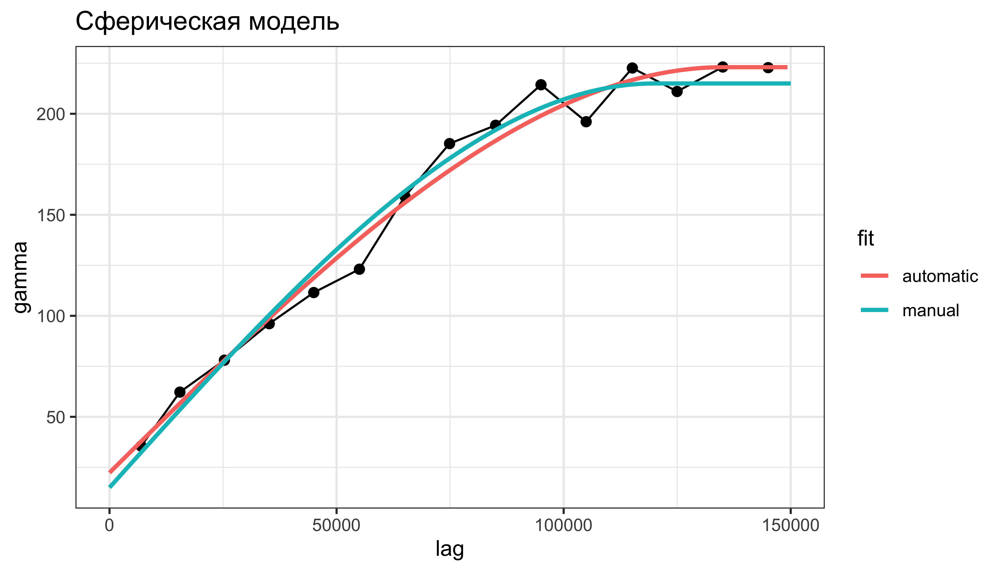
Данная модель достигает плато в точке \(h = a\).
14.4.13 Экспоненциальная модель
\[\gamma(h) = \begin{cases} 0, & h = 0; \\ c_0 + (c-c_0)\Big[1 - \exp\big(\frac{-3h}{a}\big)\Big], & h \neq 0. \end{cases}\]
\[\gamma(a) = \Var\big[Z(p)\big] = c_0 + c\]
tab = tibble::tibble(
h = h,
gamma = 1 - exp(-3*h/a)
)
pl = ggplot() +
geom_line(tab, mapping = aes(h, gamma), size = 1, color = 'steelblue') +
geom_vline(xintercept = a, color = 'orangered') +
annotate("text", x = a + 3, y = 0.5625, label = paste("a =", a), color = 'orangered') +
theme_bw()
(pl)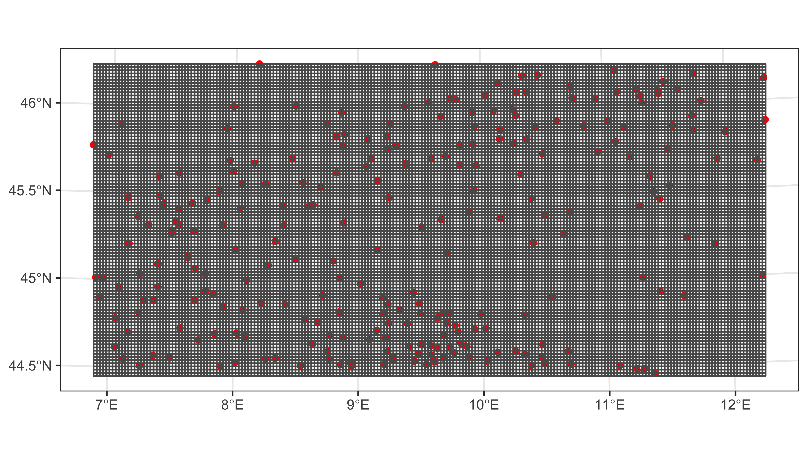
- Данная модель достигает плато асимптотически.
- В точке \(h = a\) достигается \(95\%\) уровня плато.
14.4.14 Гауссова модель
\[\gamma(h) = c_0 + c\Bigg[1 - \exp\bigg(\frac{-3h^2}{a^2}\bigg)\Bigg]\]
tab = tibble::tibble(
h = h,
gamma = 1 - exp(-3*h^2/a^2)
)
pl = ggplot() +
geom_line(tab, mapping = aes(h, gamma), size = 1, color = 'steelblue') +
geom_vline(xintercept = a, color = 'orangered') +
annotate("text", x = a + 3, y = 0.5625, label = paste("a =", a), color = 'orangered') +
theme_bw()
(pl)
- Данная модель достигает плато асимптотически.
- В точке \(h = a\) достигается \(95\%\) уровня плато.
- Отличительной чертой этой модели является ее гладкость: параболическое поведение вблизи нуля и асимптотическое приближение к плато.
14.4.15 Степенная модель
\[\gamma(h) = \begin{cases} 0, & h = 0; \\ c h^\alpha, & h \neq 0. \end{cases}\]
tab = tibble::tibble(
h = h,
gamma = h^1.5
)
pl = ggplot() +
geom_line(tab, mapping = aes(h, gamma), size = 1, color = 'steelblue') +
theme_bw()
(pl)
- Автокорреляция присутствует на всех расстояниях: \(a \rightarrow \infty\)
- Предположение о стационарности второго порядка не выполняется
- Как правило, это означает наличие тренда в данных
14.4.16 Эффект самородка (модель наггет)
\[\gamma(h) = \begin{cases} 0, & h = 0; \\ c_0, & h \neq 0. \end{cases}, ~ c_0 = C(0)\]
tab = tibble::tibble(
gamma = rep(1, n+1),
h = h
)
ggplot() +
geom_line(tab, mapping = aes(h, gamma), size = 1, color = 'steelblue') +
geom_point(data = data.frame(x = 0, y = 1), mapping = aes(x, y), shape=21,
colour = 'steelblue', fill = 'white', size = 3, stroke = 1.5) +
annotate('point', x = 0, y = 0, color = 'steelblue', size = 4) +
theme_bw()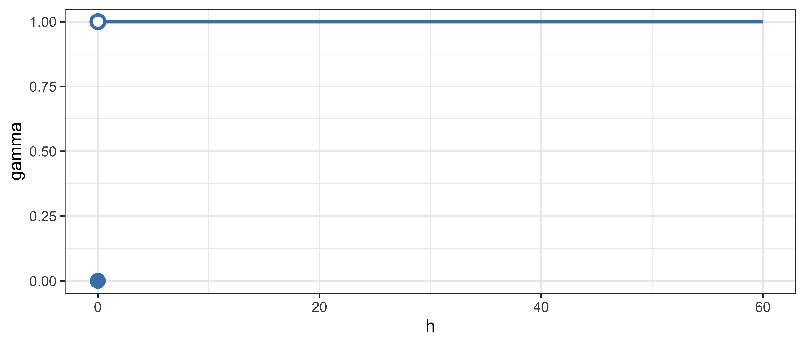
- Наличие у данных вариограммы типа наггет означает отсутствие пространственной корреляции.
- Возможные причины:
- Абсолютно случайное распределение
- Мелкомасштабная вариабельность (меньше, чем расстояние между измерениями)
- Ошибки в измерениях
- Ошибки в координатах точек
14.4.17 Диаграмма рассеяния с лагом
Lagged scatterplot — вариант диаграммы рассеяния, на котором показываются значения в точках, расстояние между которыми попадает в заданный интервал
options(scipen = 999)
cities = st_read("data/Italy_Cities.gpkg")
## Reading layer `Italy_Cities' from data source `/Users/tsamsonov/GitHub/r-geo-course/data/Italy_Cities.gpkg' using driver `GPKG'
## Simple feature collection with 8 features and 37 fields
## geometry type: POINT
## dimension: XY
## bbox: xmin: 368910.4 ymin: 4930119 xmax: 686026 ymax: 5115936
## projected CRS: WGS 84 / UTM zone 32N
rainfall = read_table2("data/Rainfall.dat") %>%
st_as_sf(coords = c('x', 'y'),
crs = st_crs(cities),
remove = FALSE)
hscat(rain_24~1, data = rainfall, 1000 * c(0, 10, 20, 50, 100), pch = 19)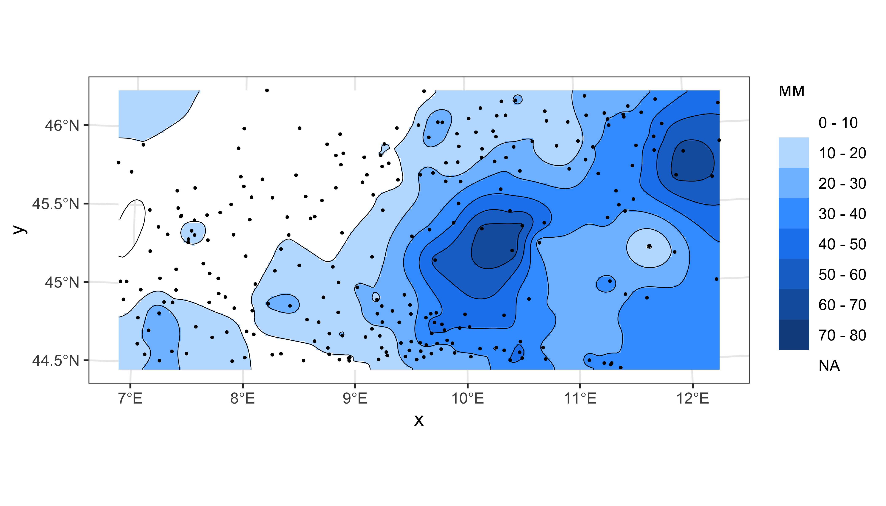
14.4.18 Вариограммное облако
Квадрат разности значений как функция от расстояния между точками
varcl = variogram(rain_24~1, data=rainfall, cutoff = 150000, cloud=TRUE)
ggplot(varcl) +
geom_point(aes(dist, gamma), alpha = 0.5, size = 2, color = 'steelblue') +
ylab('semivariance') +
theme_bw()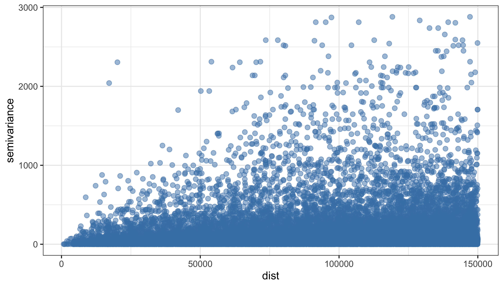
14.4.19 Эмпирическая вариограмма
Эмпирическая вариограмма рассчитывается путем разбения вариограммного облака на интервалы расстояний — лаги — и подсчета среднего значения \(\gamma\) в каждом лаге по следующей формуле:
\[\hat{\gamma} = \frac{1}{2N_h} \sum_{x_i - x_j \approx h} \big[z(x_i) - z(x_j)\big]^2\]
width = 10000
intervals = width * 0:15
vargr = variogram(rain_24~1, data=rainfall, cutoff = 150000, width = width)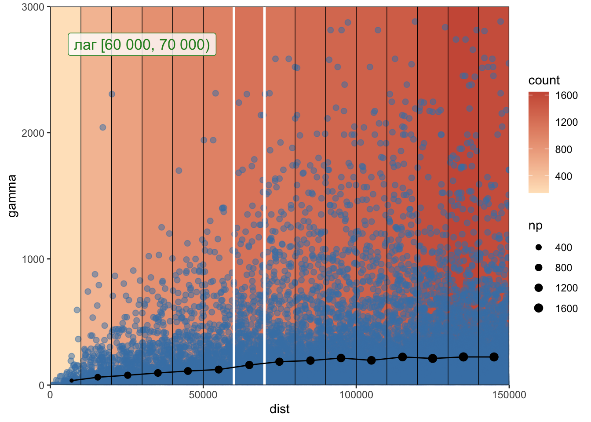
Оставив только вариограмму, получим:
ggplot() +
geom_line(vargr, mapping = aes(dist, gamma)) +
geom_point(vargr, mapping = aes(dist, gamma, size = np)) +
scale_size(range = c(1, 5)) +
theme_bw() Размер точки означает количество пар значений, которые попали в каждый лаг.
Размер точки означает количество пар значений, которые попали в каждый лаг.
Поскольку вариограмма есть дисперсия разности значений, ее рост при увеличении расстояния можно оценить также по увеличению размера «ящика» на диаграмме размаха \(\sqrt\gamma\):
varcl = varcl %>%
mutate(sqgamma = sqrt(gamma),
lag = cut(dist, breaks = intervals, labels = 0.001 * (intervals[-1] - 0.5*width)))
ggplot(varcl) +
geom_boxplot(aes(lag, sqrt(gamma)), outlier.alpha = 0.1)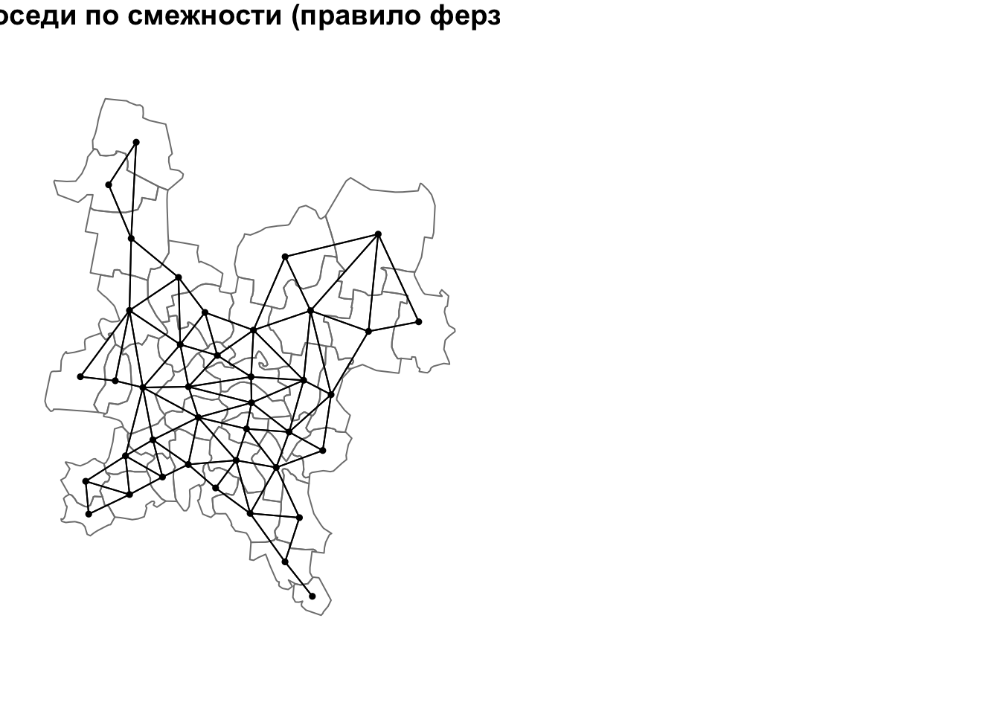
14.4.20 Вариокарта
Вариокарта (variogram map, variomap) представляет вариограмму как функцию приращений координат: \[\hat{\gamma} (\Delta x, \Delta y) = \frac{1}{2N_{\substack{\Delta x\\ \Delta y}}} \sum_{\substack{\Delta x_{ij} \approx \Delta x\\ \Delta y_{ij} \approx \Delta y}} \big[z(p_i) - z(p_j)\big]^2\]
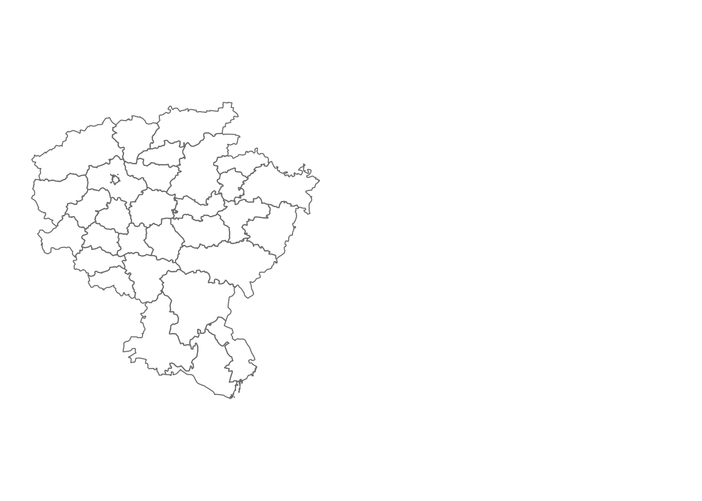
Вариокарта используется для выявления пространственной анизотропии. Профиль по линии из центра к краю вариокарты даст эмпирическую вариограмму
14.4.21 Приближение теоретической модели
Приближение (fitting) модели вариограммы предполагает:
- Выбор теоретической модели
- Подбор параметров модели: эффект самородка (nugget), радиус корреляции и плато.
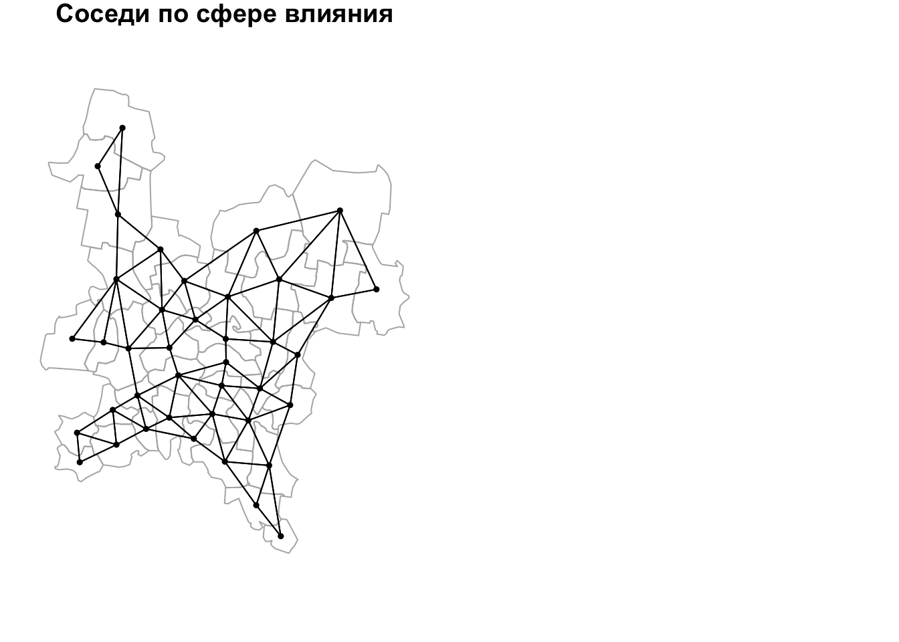
Дана вариограмма семейства \(\gamma (h; \mathbf{b})\), где \(\mathbf{b} = (b_1, ..., b_k)\) — вектор из \(k\) параметров модели. Параметры \(\mathbf{b}\) подбираются таким образом, чтобы минимизировать следующий функционал:
\[Q(\mathbf{b}) = \sum_{l=1}^{L} w_l \big[\hat{\gamma}(h_l) - \gamma (h; \mathbf{b})\big]^2,\]
где \(\big\{\hat{\gamma} (h_l): l = 1,...,L\big\}\) — значения эмпирической вариограммы для \(L\) лагов, вычисленные по \(N(h_l)\) векторам.
Веса \(w_l\) обычно выбираются исходя из отношения \(w_l = N(h_l) / |h_l|\), чтобы придать большее значение коротким расстояниям и лагам с хорошей оценкой.
Минимизация функционала осуществляется итеративно:
- Процесс начинается с некоторого предположения \(\mathbf{b}^{(0)}\)
- На шаге \(s\) функция \(Q\) аппроксимируется в виде квадратичной формы \(Q(\mathbf{b}^{(s)}) \approx \sum_{i=1}^k \sum_{j=1}^k \delta_{ij} b_i b_j\) путем разложения в ряд Тейлора вокруг точки \(\mathbf{b}^{(s)}\).
- Новая точка минимума \(\mathbf{b}^{(s+1)}\) находится как минимум квадратичной формы (этот минимум один).
Шаги 2-3 повторяются до тех пор, пока значение \(Q\) не станет меньше заданного порога.
Сравним результат ручного и автоматического приближения вариограммы:
varmd = fit.variogram(vargr, model = vgm(psill = 215, model = 'Sph', range = 120000, nugget = 15))
h0 = lag * 0:(varmd[2, 'range']/lag)
h1 = lag * (varmd[2, 'range']/lag + 1):(cutoff/lag)
tab2 = tibble::tibble(
h = c(h0, h1),
gamma = c(varmd[1, 'psill'] + (varmd[2, 'psill'] * (3 * h0 / (2 * varmd[2, 'range']) - 0.5 * (h0 / varmd[2, 'range'])^3)), rep(varmd[1, 'psill'] + varmd[2, 'psill'], length(h1))),
fit = 'automatic'
)
tab = bind_rows(tab1, tab2)
ggplot() +
geom_line(vargr, mapping = aes(dist, gamma)) +
geom_point(vargr, mapping = aes(dist, gamma), size = 2) +
scale_size(range = c(1, 5)) +
geom_line(tab, mapping = aes(h, gamma, color = fit), size = 1) +
xlab('lag') + ylab('gamma') +
ggtitle('Сферическая модель') +
theme_bw()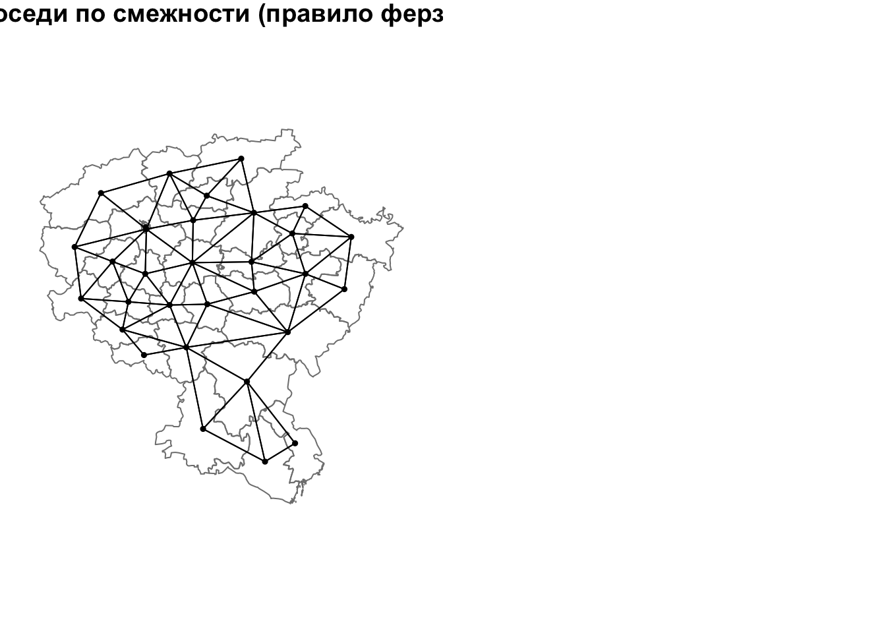
14.4.22 Обычный кригинг
Рассмотрим данные по температуре:
box = st_bbox(rainfall)
envelope = box[c(1,3,2,4)]
px_grid = st_as_stars(box, dx = 2000, dy = 2000)
ggplot() +
geom_sf(data = rainfall, color = 'red') +
geom_sf(data = st_as_sf(px_grid), size = 0.5, fill = NA)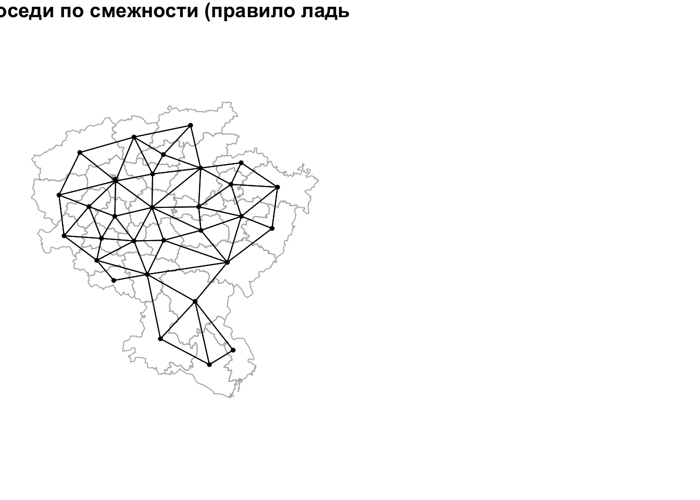
14.4.23 Обычный кригинг
Визуализируем найденную вариограмму и вариокарту:
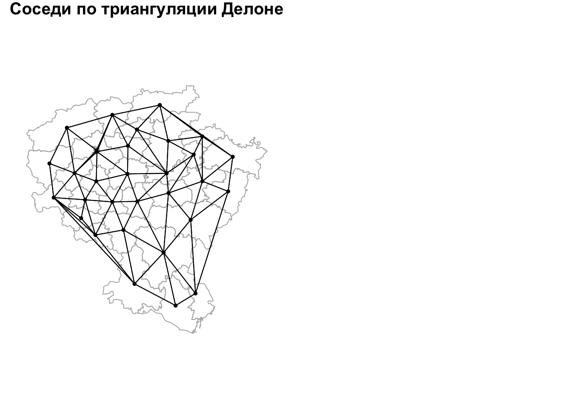

Проинтерполируем, используя приближенную модель вариограммы:
(px_grid = krige(rain_24~1, rainfall, px_grid, model = varmd))
## [using ordinary kriging]
## stars object with 2 dimensions and 2 attributes
## attribute(s):
## var1.pred var1.var
## Min. :-0.4092 Min. : 30.99
## 1st Qu.: 7.7076 1st Qu.: 45.44
## Median :18.8332 Median : 52.72
## Mean :21.5098 Mean : 58.67
## 3rd Qu.:32.0739 3rd Qu.: 65.48
## Max. :67.2664 Max. :186.22
## dimension(s):
## from to offset delta refsys point values
## x 1 213 332239 2000 WGS 84 / UTM zone 32N NA NULL [x]
## y 1 99 5121556 -2000 WGS 84 / UTM zone 32N NA NULL [y]14.4.24 Оценка и дисперсия кригинга
rain_colors = colorRampPalette(c("white", "dodgerblue", "dodgerblue4"))
rain_levels = seq(0,80,by=10)
rain_ncolors = length(rain_levels)-1
err_colors = colorRampPalette(c("white", "coral", "violetred"))
err_levels = seq(0, 180, by = 20)
err_ncolors = length(err_levels) - 1
cont = st_contour(px_grid['var1.pred'], breaks = rain_levels, contour_lines = TRUE)
conterr = st_contour(px_grid['var1.var'], breaks = err_levels, contour_lines = TRUE)
ggplot() +
geom_stars(data = cut(px_grid['var1.pred'], breaks = rain_levels)) +
scale_fill_manual(name = 'мм',
values = rain_colors(rain_ncolors),
labels = paste(rain_levels[-rain_ncolors-1], '-', rain_levels[-1]),
drop = FALSE) +
coord_sf(crs = st_crs(rainfall)) +
geom_sf(data = cont, color = 'black', size = 0.2) +
geom_sf(data = rainfall, color = 'black', size = 0.3) +
theme_bw()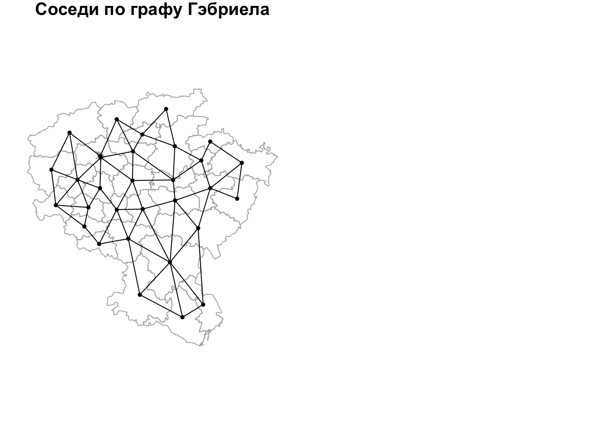
ggplot() +
geom_stars(data = cut(px_grid['var1.var'], breaks = err_levels)) +
scale_fill_manual(name = 'мм',
values = err_colors(err_ncolors),
labels = paste(err_levels[-err_ncolors-1], '-', err_levels[-1]),
drop = FALSE) +
coord_sf(crs = st_crs(rainfall)) +
geom_sf(data = conterr, color = 'black', size = 0.2) +
geom_sf(data = rainfall, color = 'black', size = 0.3) +
theme_bw()
Дисперсия кригинга высока там, где мало данных.
14.4.25 Кросс-валидация
Для выполнения кросс-валидации воспользуемся функцией krige.cv:
cvl = krige.cv(rain_24~1, rainfall, varmd) %>%
st_as_sf() %>%
mutate(sterr = residual / sqrt(var1.var))
head(cvl %>% st_set_geometry(NULL), 10)
## var1.pred var1.var observed residual zscore fold sterr
## 1 5.743730 34.84033 6.0 0.25627005 0.04341669 1 0.04341669
## 2 11.137129 60.24070 10.0 -1.13712865 -0.14650910 2 -0.14650910
## 3 6.929502 47.22732 7.0 0.07049833 0.01025846 3 0.01025846
## 4 23.252858 48.06354 1.0 -22.25285758 -3.20979954 4 -3.20979954
## 5 15.655167 56.76258 1.0 -14.65516724 -1.94517957 5 -1.94517957
## 6 11.794241 44.03055 1.0 -10.79424095 -1.62672846 6 -1.62672846
## 7 11.325378 62.65261 0.1 -11.22537769 -1.41818009 7 -1.41818009
## 8 28.421330 75.24988 0.2 -28.22133030 -3.25330355 8 -3.25330355
## 9 2.340115 58.30350 1.0 -1.34011550 -0.17550719 9 -0.17550719
## 10 3.489972 62.96551 0.2 -3.28997242 -0.41461106 10 -0.41461106Cтандартизированные ошибки в стационарном случае должны быть распределены нормально:
ggplot(cvl, aes(x = sterr)) +
geom_histogram(aes(y = stat(density)), fill = 'grey', color = 'black', size = 0.1) +
geom_density(fill = 'olivedrab', alpha = 0.5) +
theme_bw()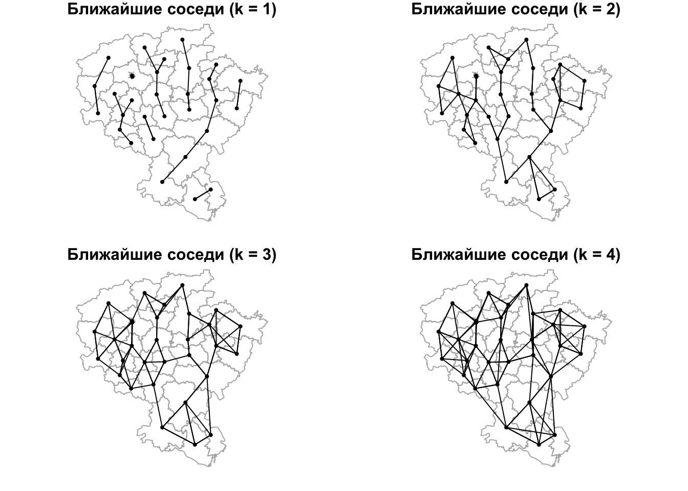
Ошибки должны быть независимы от значений:
ggplot(cvl, aes(x = var1.pred, sterr)) +
geom_point(alpha = 0.8) +
geom_smooth(method = 'lm') +
theme_bw()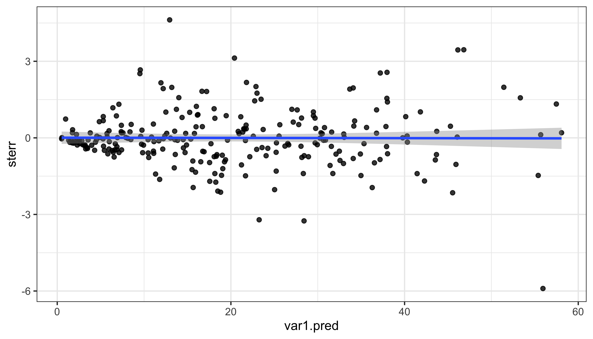
cor.test(~ sterr + var1.pred, data = cvl)
##
## Pearson's product-moment correlation
##
## data: sterr and var1.pred
## t = -0.084465, df = 253, p-value = 0.9328
## alternative hypothesis: true correlation is not equal to 0
## 95 percent confidence interval:
## -0.1280692 0.1176091
## sample estimates:
## cor
## -0.005310204Облако рассеяния оценки относительно истинных значений должно быть компактным:
ggplot(cvl, aes(x = var1.pred, observed)) +
geom_point(alpha = 0.8) +
geom_smooth(method = 'lm') +
theme_bw()
# Диагностика модели линейной регрессии
summary(lm(observed ~ var1.pred, cvl))
##
## Call:
## lm(formula = observed ~ var1.pred, data = cvl)
##
## Residuals:
## Min 1Q Median 3Q Max
## -47.812 -3.914 -0.505 3.227 32.685
##
## Coefficients:
## Estimate Std. Error t value Pr(>|t|)
## (Intercept) -0.03375 0.93884 -0.036 0.971
## var1.pred 1.00020 0.03919 25.519 <0.0000000000000002 ***
## ---
## Signif. codes: 0 '***' 0.001 '**' 0.01 '*' 0.05 '.' 0.1 ' ' 1
##
## Residual standard error: 8.405 on 253 degrees of freedom
## Multiple R-squared: 0.7202, Adjusted R-squared: 0.7191
## F-statistic: 651.2 on 1 and 253 DF, p-value: < 0.00000000000000022Пространственная картина стандартизированных ошибок должна быть гомогенной:
library(akima)
coords = st_coordinates(rainfall)
coords_grid = st_coordinates(px_grid)
px_grid = px_grid %>%
mutate(sterr = interpp(x = coords[,1],
y = coords[,2],
z = cvl$sterr,
xo = coords_grid[,1],
yo = coords_grid[,2],
linear = FALSE,
extrap = TRUE)$z)
sterr_levels = seq(-8,8,2)
sterr_ncolors = length(sterr_levels)-1
sterr_colors = colorRampPalette(c('blue', 'white', 'red'))
sterrcont = st_contour(px_grid['sterr'], breaks = sterr_levels, contour_lines = TRUE)
ggplot() +
geom_stars(data = cut(px_grid['sterr'], breaks = sterr_levels)) +
scale_fill_manual(name = 'мм',
values = sterr_colors(sterr_ncolors),
labels = paste(sterr_levels[-sterr_ncolors-1], '-', sterr_levels[-1]),
drop = FALSE) +
coord_sf(crs = st_crs(rainfall)) +
geom_sf(data = sterrcont, color = 'black', size = 0.2) +
geom_sf(data = rainfall, color = 'black', size = 0.3) +
theme_bw()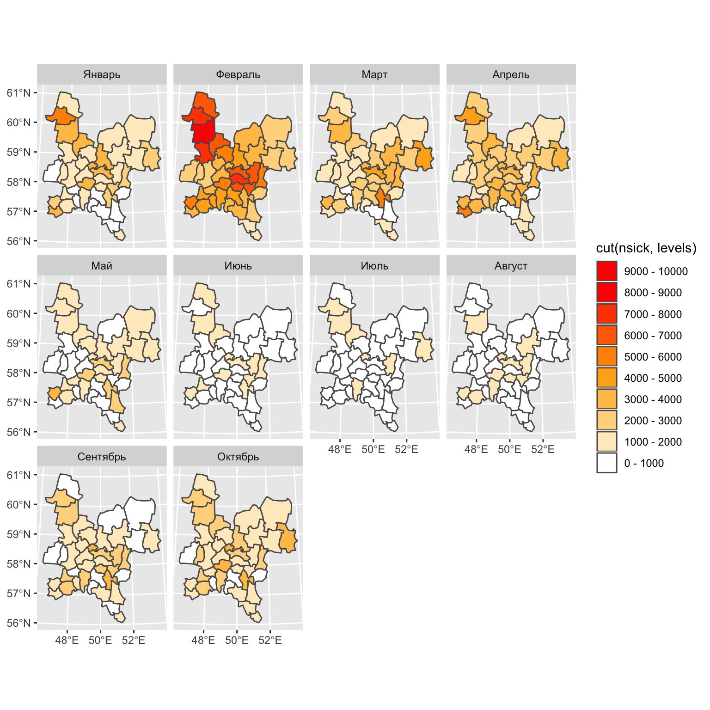
14.5 Краткий обзор
Для просмотра презентации щелкните на ней один раз левой кнопкой мыши и листайте, используя кнопки на клавиатуре:
Презентацию можно открыть в отдельном окне или вкладке браузере. Для этого щелкните по ней правой кнопкой мыши и выберите соответствующую команду.
14.6 Контрольные вопросы и упражнения
14.6.1 Вопросы
- Дайте определения случайной величины, случайного процесса, сечения случайного процесса, реализации случайного процесса. Проиллюстрируйте их примерами.
- Сформулируйте определение основных моментов пространственного случайного процесса: математического ожидания, дисперсии и ковариации. Поясните суть этих понятий на конкретных примерах.
- Дайте определение стационарности в строгом смысле слова и стационарности второго порядка.
- При каком условии случайная функция является изотропной?
- Что такое эргодичность? Пояснить суть этого свойства на наглядном примере.
- Сформулируйте суть кригинга как метода интерполяции данных. В чем его сходства и отличия в сравнении с методом радиальных базисных функций?
- Что из себя представляет среднеквадратическая ошибка, минимизируемая в методе кригинга?
- Почему среднеквадратическую ошибку можно считать равной дисперсии в методе простого кригинга?
- Что характеризует дисперсия кригинга?
- Напишите систему уравнений простого кригинга и выражение для дисперсии простого кригинга.
- Дайте определение стационарности приращений. С какой целью вводится данный тип стационарных процессов?
- Какие условия должны быть выполнены для того чтобы ковариацию можно было заменить вариограммой в уравнениях кригинга?
- Напишите систему уравнений обычного кригинга и выражение для дисперсии обычного кригинга. Чем эти уравнения отличаются от уравнений простого кригинга?
- Изложите модель универсального кригинга в математической и словесной форме.
- Что такое базисные функции и ковариаты? Какую роль они выполняют в методе универсального кригинга?
- Сформулируйте условия универсальности, от которых ведет свое название метод универсального кригинга.
- Напишите систему уравнений универсального кригинга и выражение для дисперсии универсального кригинга.
- Перечислите стандартный набор действий, применяемых в рамках выполнения процедуры кросс-валидации результатов кригинга.
- Что такое вариограмма? Дайте математическое и словесное определение.
- Перечислите свойства вариограммы.
- Назовите основные модели вариограммы. Какая модель свидетельствует о наличии пространственного тренда в данных?
- Чем эмпирическая вариаограмма отличается от теоретической (модели)?
- Сформулируйте принципы построения и назначение основных диагностических графиков вариографии: диаграммы рассеяния с лагом, вариограммного облака, эмпирической вариограммы, вариокарты.
- Объясните, каким образом можно получить приближение (подгонку) теоретической модели вариограммы под эмпирические данные.
- Расскажите об основных возможностях пакета gstat. Перечислите функции этого пакета, которые используются для вариографии и интерполяции методом кригинга.
14.6.2 Упражнения
Загрузите данные дрейфующих буев ARGO на акваторию Северной Атлантики за 30 января 2010 года. Постройте поля распределения солености и температуры методом обычного кригинга с размером ячейки 50 км. Подберите подходящую модель вариограммы. Выполните визуализацию оценки кригинга и дисперсии кригинга средствами ggplot2. Произведите кросс-валидацию полученных результатов.
Подсказка: перед построением сетки интерполяции странсформируйте данные в проекцию Меркатора. Чтобы полученное поле распределения покрывало только акваторию, маскируйте полученный растр с использованием слоя ocean из набора данных Natural Earth. Перед выполнением маскирования преобразуйте мультиполигон в обычные полигоны (в противном случае маскирование отработает некорректно).
| Самсонов Т.Е. Визуализация и анализ географических данных на языке R. М.: Географический факультет МГУ, 2020. DOI: 10.5281/zenodo.901911 |